InsureNivaran: making insurance understandable.
- The problem
- Choosing insurance in India means navigating scattered, jargon-heavy information — premiums, claim-settlement ratios, and exclusions live in different places and rarely line up. The result is decision paralysis and low confidence.
- My role
- InsureNivaran was a team project split across designers. I owned Smart Insurance Recommendation and Campaign Feedback end-to-end through hi-fi wireframes. Testing was run collaboratively; the design iterations in response are mine.
- What testing found
- The recommendation flow largely worked — but its coverage calculator failed, and the failure traced back to my own spec. The campaign feedback feature failed on 3 of 6 screens because users had no mental model for it.
- What I changed
- Re-anchored the calculator to a named provider, restoring the spec's original intent — and changed how I work: specs get re-read during hi-fi design, and unfamiliar interaction patterns get tested earliest.
The problem worth solving: trust erosion and opaque comparison
Insurance information in India is fragmented by design — every provider presents premiums, claim-settlement ratios, and exclusions differently, so a like-for-like comparison is nearly impossible for a normal buyer. What our testers said pointed at uncertainty about what they were comparing, not vocabulary. The product's job was to make comparison legible without pretending insurance is simple.
Smart Insurance Recommendation
A guided flow: state your needs, get matched plans, compare providers side by side, adjust coverage with a live premium calculator, and check out. I designed all screens through hi-fi.
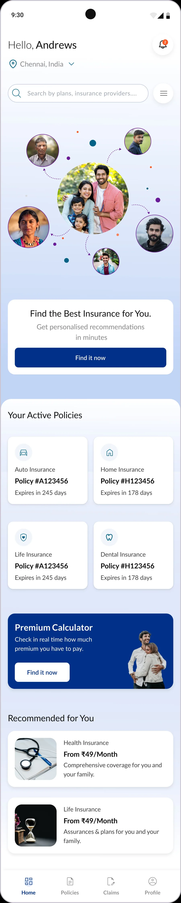
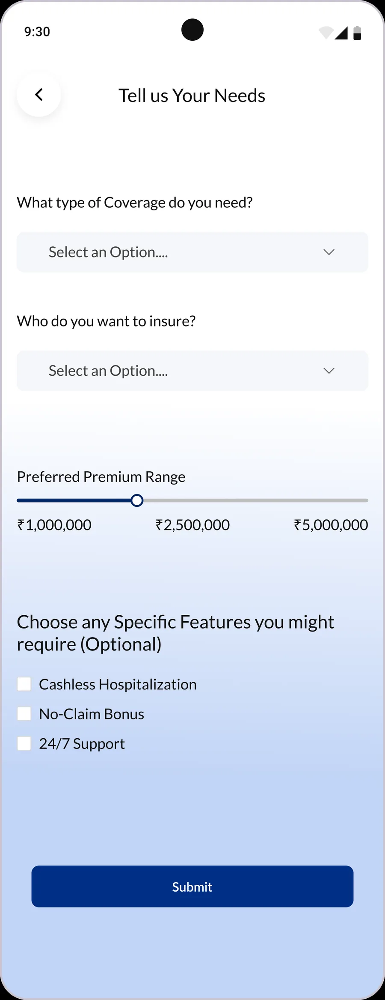
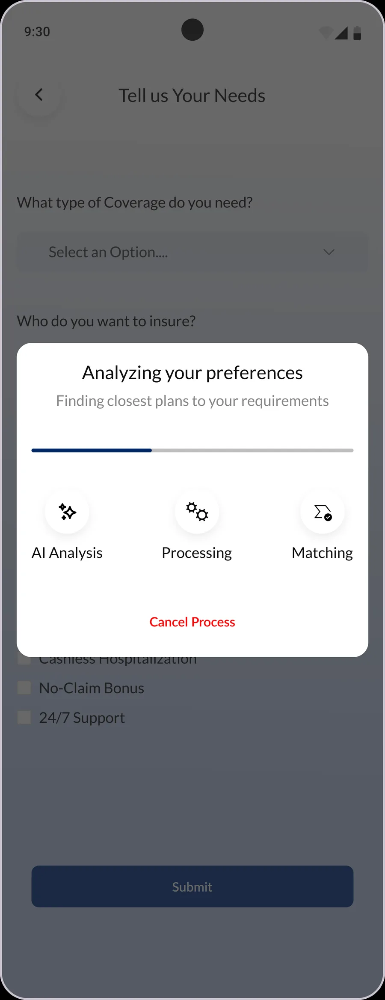
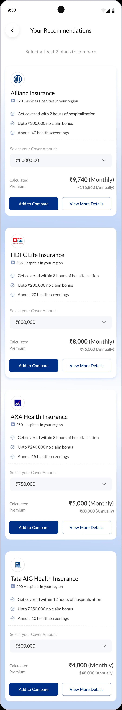
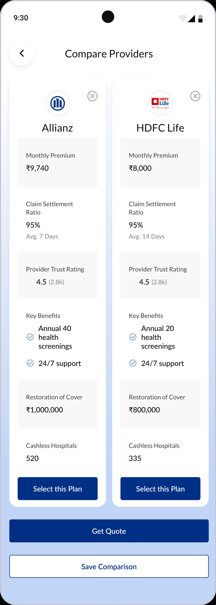
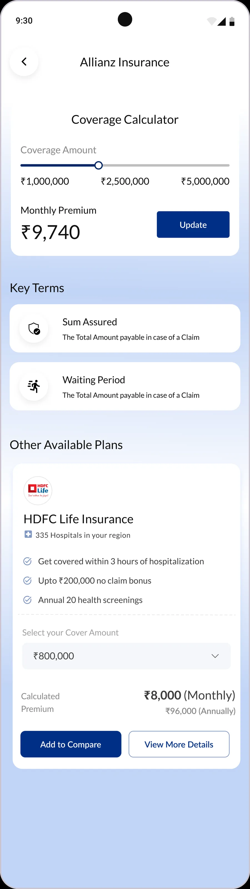
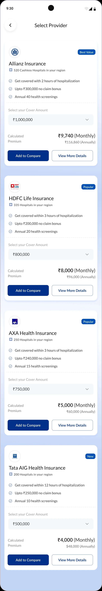
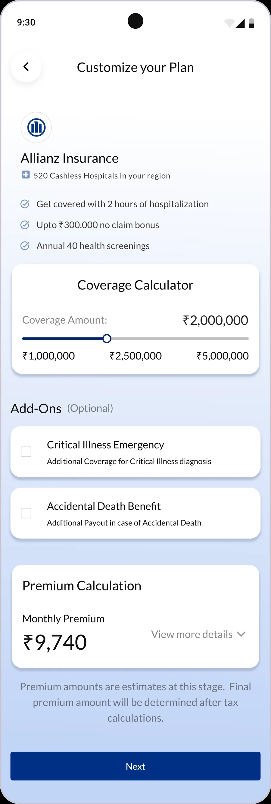
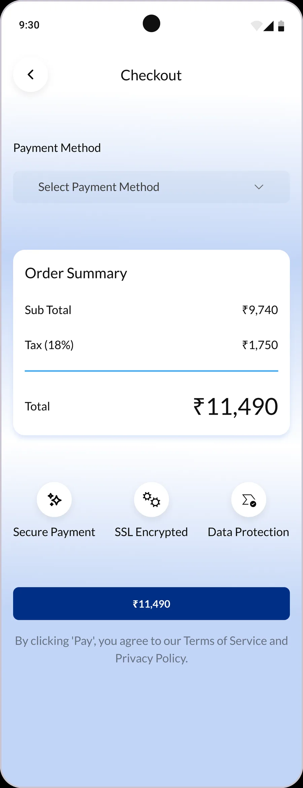
What testing surfaced, screen by screen
| Screen | Verdict | What was said / found |
|---|---|---|
| Dashboard | Pro | "It was easy." No friction. |
| Tell Us Your Needs | Neutral | Form understood; no blockers. |
| Your Recommendations | Mixed | Careful persona stalls. |
| Compare Providers | Pro | "I like the comparison grid." |
| Coverage Calculator | Con | Slider missing its provider anchor. |
| Checkout | Pro | Frictionless; trust badges land. |
The finding that traced back to my own spec
On the Coverage Calculator, a participant asked: "For which insurance am I looking at the coverage slider — that is missing."
My wireframe spec had placed the slider below each provider card. In hi-fi, it was lifted into a standalone screen and lost that anchor. The complaint wasn't new — it was the design drifting from its own specification, and I was the one who let it drift.
Fix: re-anchored the calculator to a named provider, restoring the spec's original intent. The lesson wasn't "add a label" — it was that specs need re-reading during hi-fi design, not just before it.
Campaign Feedback — the feature that failed testing
A flow for users to rate and comment on insurance campaigns. Across 3 usability sessions with the same 2 personas, 3 of the 6 screens tested negative. I'm including the full verdicts because the diagnosis matters more than the score.
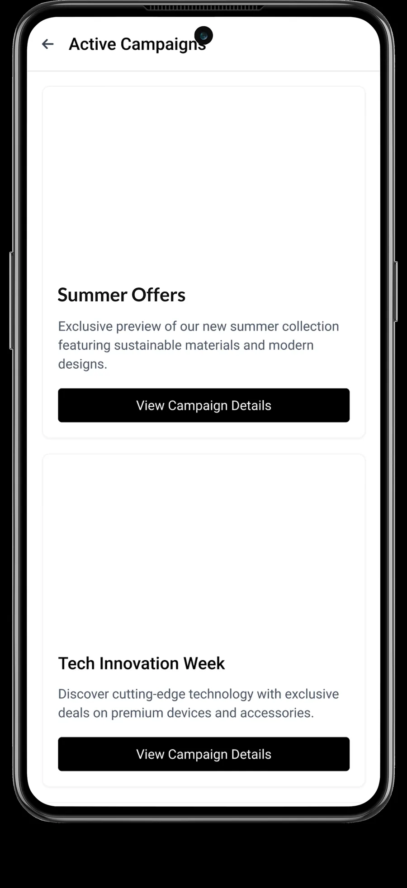
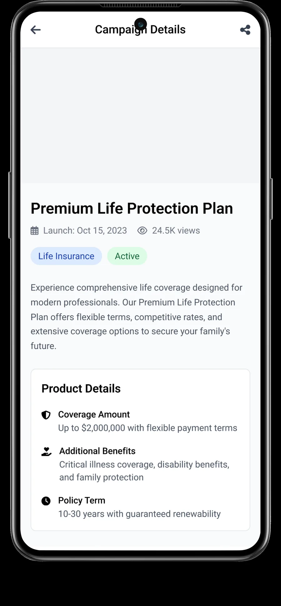
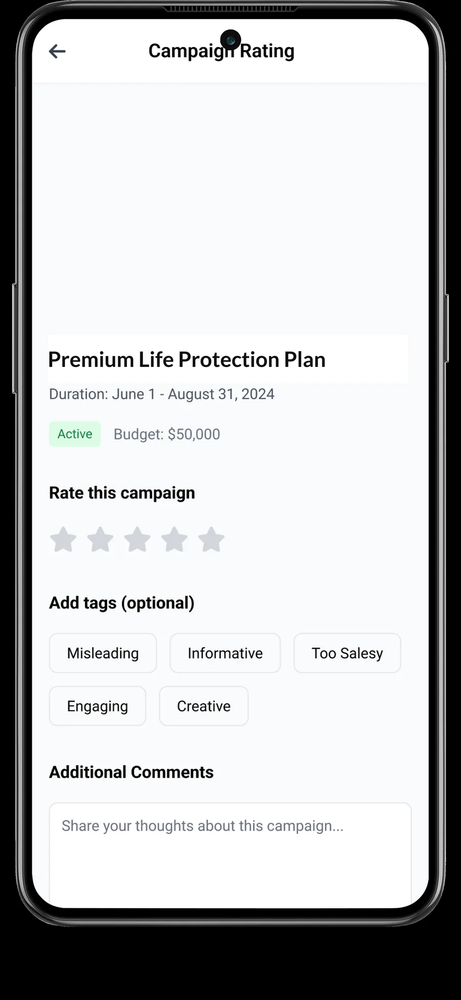
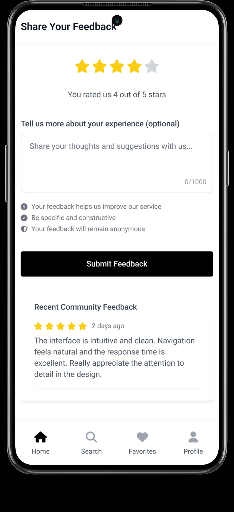
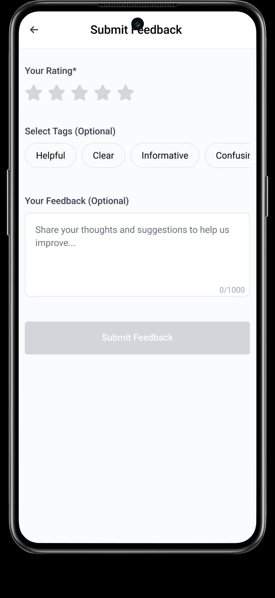
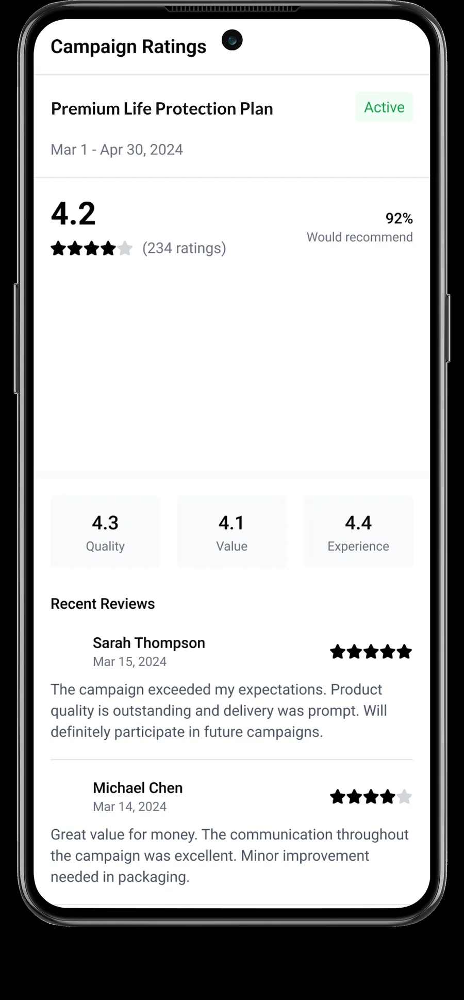
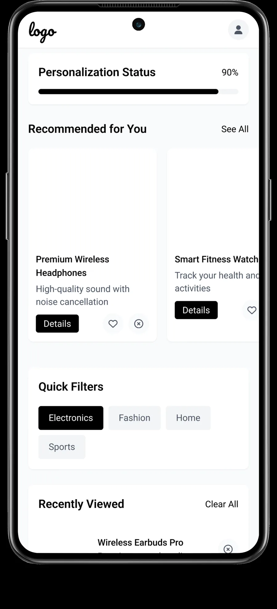
Why it fell short
| Screen | Verdict | What was said / found |
|---|---|---|
| Active Campaigns | Con | "I'm not sure what these are all about." |
| Campaign Details | Con | "I haven't used something like this before." |
| Provide Feedback | Mixed | "This page is same as next one." |
| Star Feedback | Con | Tags and stars confused two of three users. |
| Campaign Ratings | Pro | "I used it to check other feedback." |
| Summary | Neutral | Low engagement from users. |
The diagnosis: users had no existing mental model for giving feedback on insurance campaigns. Clean screens can't rescue an action people don't understand the purpose of — the failure was conceptual, not visual, and no amount of UI polish would have fixed it.
Two changes to how I work
1 · Specs get re-read during hi-fi design, not only before it. Most of what testing caught was drift that happened mid-design — the spec was right, and the design walked away from it.
2 · Unfamiliar behaviours get tested earliest. A clean screen can't rescue an action users have no mental model for. If a pattern is novel, it goes in front of users before anything else does.